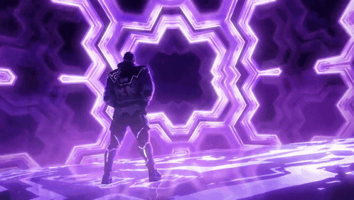
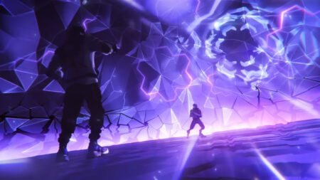
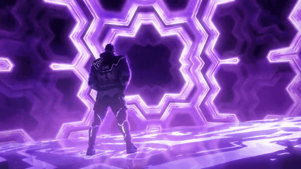
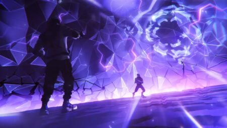

NOTAS DE LA VERSIÓN 8.01 DE VALORANT
¡Hola, mi gente! Soy MiracleOfBaa.
Enero de 2024 casi ha llegado a su fin, pero todavía tenemos una
versión más antes de despedirnos del primer mes del nuevo año.
A continuación encontraréis algunas actualizaciones de agentes, así
como una actualización de Breeze.
Seguid leyendo y nos veremos otra vez por A Hall.
Una cosa más: siempre prestamos atención a vuestros comentarios y
opiniones, así que contadnos qué pensáis.
ACTUALIZACIONES DE MAPAS - BREEZE
A Hall reabierto.
Seguimos analizando y reuniendo comentarios sobre los últimos
cambios que ha recibido Breeze.
Nos parece buena idea haber simplificado A Main, Mid y B Site.
Sin embargo, la combinación de estos cambios y el cierre de A Hall
pueden resultar increíblemente restrictivos a la hora de atacar.
Por ello, vamos a reabrir A Hall, a fin de ofrecer a los atacantes
más opciones y no tener que renunciar al resto de cambios del mapa.


ACTUALIZACIONES DE AGENTES - SKYE
Durante la segunda mitad de 2023, Skye se convirtió en una fuerza
dominante entre los iniciadores y eclipsó a sus camaradas en lo
referido a su porcentaje de selección tanto en la cola en solitario
como en la grupal.
Su principal habilidad, Luz guía (E), ha desempeñado un papel
importante en su reinado, ya que ofrece a Skye una gran ventaja en
combate, valiosa información de reconocimiento y el único destello
recargable del plantel de iniciadores.
Aunque nos gusta que Skye cuente con una mezcla de destellos y
herramientas de reconocimiento, así como la diversidad que es capaz
de aportar a cualquier composición, carece de puntos débiles claros
que compensen su inmenso poder.
Estos cambios se centran en obligar a Skye a emplear Luz guía (E) de
una forma más deliberada.
Servirán para crear un coste de oportunidad evidente al incluir a
Skye en una composición y, al mismo tiempo, para que conserve su
poderosa combinación de ventajas ofensivas y reconocimiento entre
los iniciadores.
Esperamos que esta actualización haga que Skye siga siendo viable
tanto en la cola en solitario como en la escena de juego coordinado
y, además, permita que otros agentes centrados en los destellos
brillen con luz propia.
De todos modos, la vigilaremos de cerca por si hiciese falta lanzar
algún otro cambio.
Al eliminar la recarga de Luz guía (E), decidir en qué momento de la
ronda utilizar esta habilidad se vuelve más relevante y, además,
sirve para equilibrar su poder, pues otorga ventaja en combate e
información de reconocimiento.
Esto generará desventajas claras en ciertas situaciones, como al
usarla al principio de una ronda para reunir información, y animará
a Skye a pensarse más las cosas sin que pierda su opcionalidad
única.
Al hacer que el destello de Skye se active al final de la habilidad,
la obligaremos a lanzar sus falsos destellos de una forma más
consciente y le facilitaremos el vuelo con Luz guía (E) hasta su
distancia máxima sacándole todo el partido posible.
Luz guía (E)
Luz guía ya no regenera sus cargas durante la ronda.
Ahora el destello de Luz guía se activa de forma automática al final
de su duración.
ACTUALIZACIONES DE AGENTES - ISO
Vamos a actualizar a Iso para aumentar el control y las ventajas de combate que otorga Disparo doble (E). El aumento de la duración del orbe de energía os proporcionará más tiempo para lidiar con las amenazas cercanas y recibir el escudo igualmente. Gracias al incremento de la mejora y de la duración del escudo, dispondréis de más tiempo para decidir cuándo lanzaros al ataque. Reducir el ancho visual del escudo de Disparo doble (E) os ofrecerá una mayor ventaja de combate al entrar en una zona, puesto que los enemigos no verán tan rápido que vais a asomaros por una esquina.
ISO
Disparo doble (E) Aumenta la duración del orbe destructible: 2 >
3 s.
Aumentan la mejora inicial y la duración del escudo: 15 > 20.
Disminuye el ancho del escudo: 120 > 100.
Hemos reducido el coste de Contingencia para reflejar con más
exactitud el valor que genera en partida.
Contingencia (C)
Se reduce el coste: 250 > 200.

 



ACTUALIZACIONES DE AGENTES - RAZE
Gracias a Fardo explosivo (Q), Raze suele ser capaz de desplazarse
distancias enormes y convertirse, de repente, en una amenaza para
sus enemigos
Vamos a actualizar sus efectos de sonido para dejar claro que Raze
puede estar utilizando Fardo explosivo (Q) para llegar a la zona en
la que estáis, sobre todo cuando estén sucediendo muchas más cosas
al mismo tiempo.